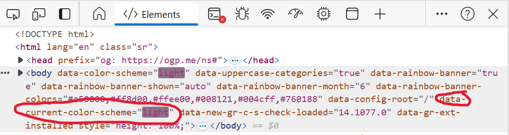

I’ve been procrastinating for almost a week before I finally realize that I have this blog on my todo list. In this blog, I will show you how I make the theme of my Giscus dynamically change with the light/dark theme of my blog site (a front-end layman’s solution).
As I mentioned in my previous post Born this way - how I built my blog, you can adjust the settings of Gisgus on their website.

NOTE: Before we start, I assume that you already have your blog built in some ways using Hexo. If this is not the case, then this blog probably can not help you that much.
Body element of light/dark theme
My solution is to fetch the body element that hold the value of current color theme (light or dark) and adjust the theme of Giscus according to the value.
So step 1, we need to find out what is the name of the specific body element.
First, right click on your blog folder, and click on “Open Git Bash here”. Then you need to starts a local server so that you can preview your blog, you can use the command below:
1 | hexo s |
Then you can go to http://localhost:4000/ for the preview. When you open the page, press F12 to see the html code of the webpage. Now you can focus on the body elements, and switch your site from light to dark. Did you see the changes are highlighted by your browser already?

You can see that here two elements of mine changed when I switch the theme:
- data-color-scheme
- data-current-color-scheme
The former one holds the value of the theme value input from the toggle on my blog page - light, dark, auto. The latter is the element that holds the value of the current color theme. The difference is that the former can be “auto” when switching the theme, and it will be more complex for us to make a function that can understand “auto” than take the value of the latter element, which tells you precisely what theme is in use.
You might find your correspond body element with very different name. The core here is to find the one can can tell you what color theme your are using.
Add the JavaScript snippet to your header
Then add this script in your head, usually, you can find it in the folder: your-blog/themes/your-theme/layout/_partial.
Remember that you need to replace the “data-current-color-scheme” in the code to the name of the body element that holds the value of the current theme.
Then the automatic syncing should be working~
1 | <script> |
Giscus load for too long?
I suffered from the problem that when it takes Gisgus too long to load, the assignment of the initial theme will fail to work. To fix that problem, below is an updated script that also listen to the load event.
1 | <script> |
Now, enjoy the dynamic theme~😮💨
About this Post
This post is written by Tangbin, licensed under CC BY-NC 4.0.